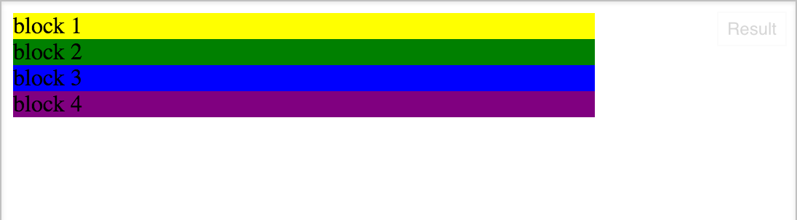
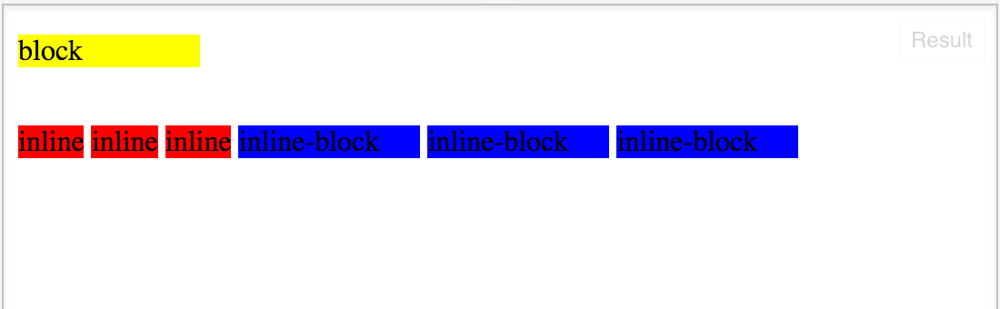

Display: inline vs inline-block
What's the difference and what does it mean?
November 27, 2015
There are so many ways to position elements in CSS it's hard to know which to use and why. The display property is one way of positioning your elements in CSS. The commonly used display property values are block, inline, inline-block, or none. In this post I want to break down the difference between inline and inline-block. I've included a code snippet below showing how you would add these display properties to your stylesheet. I used div as an example element but you could use any element you like:
First let's quickly talk about what a block element is before jumping into inline and inline-block. An element with display set to block will take up a whole line and create a line break before and after. If you created a few elements for your webpage and set them all to block, you would see them stacked on top of eachother. If you don't set their width, the element takes up the whole line. If you do specify their width, the element does not take up the whole line but the line break will force the next element to the line below. It helps to visualize this so I've added an image below showing 4 elements each with their width set to 400 pixels and display set to block. As you can see they are all on their own line. 
Now to inline and inline-block. Both inline and inline-block allow other elements to sit on the same line. Imagine a nagivation bar - all the links sit on the same line in a row. This is a great example of inline and inline-block in action. The big difference between these two display properties is the ability to set a width and height. If you have two elements, one set to inline the other set to inline-block, and set both their widths to 100 pixels, they will not be the same size. Inline elements do not accept height and width, they will only be as large as their contents. Inline-block elements will adjust based on a given height or width. Again, I think it's helpful to see a visual so take a look below. I've set the inline and inline-block elements to 100 pixels wide, but they are different sizes because of what we just discussed.  Notice the block element is still sitting on it's own line.
Imagine using an inline display to highlight a word in a paragraph, the element size doesn't really matter as long as it is large enough to contain the word we want to highlight. When creating something like a horizontal navbar we would most likely want to use inline-block because we want to the links across the top to be the same size and evenly spaced. I hope this helped to clear up the difference between inline and inline-block elements.